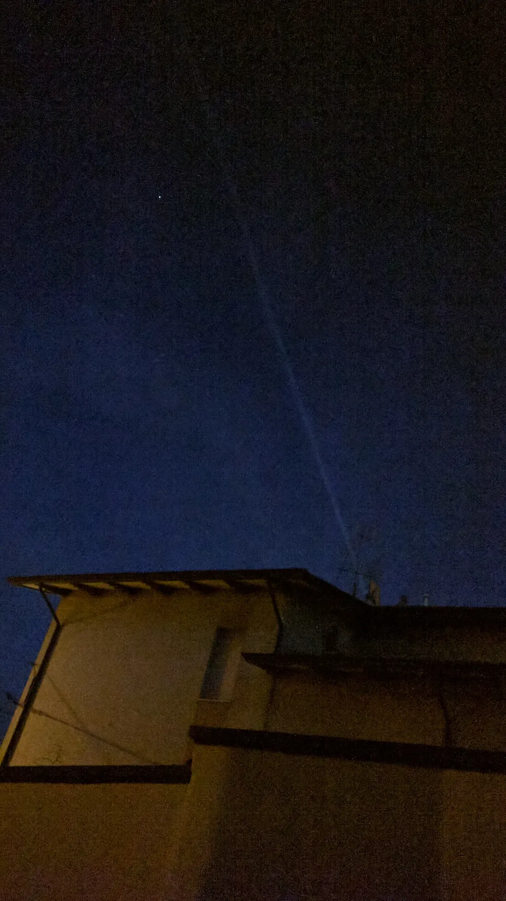

Cerchiamo l’illuminazione, ma camminiamo guardando per terra..
Pensiamo sempre al domani, ai giorni passati e con nostalgia ad albe e tramonti che sono un caldo ricordo lontano.
Ciechi, non comprendiamo quanto di bello ci circonda continuamente nel Nostro Qui e nel Nostro Ora..
Da quanto non ti soffermi a guardare le stelle?
Da quanto non guardi sorgere e tramontare il sole? Ricordi quei magnifici giochi di luce?
Da quanto non ti soffermi sul mutamento che avviene continuamente in natura?
Da quanto non riponi attenzione al ciclo delle stagioni?
Durante il tramonto i raggi del sole dipingono con sfumature di rosso tutto ciò su cui vi posano. Colori caldi si alternano, affievolendosi a poco a poco lasciando spazio a luccichii sparsi nel cielo..
Cominciano ad intravedersi alcune stelle sparse in qua e in là. Il chiarore
della luna dipinge con un bianco chiarore quel cielo, diventato ormai blu scuro.
Ecco le stelle, nascoste ai più fino pochi istanti prima, nonostante veglino su
di noi, dall’alto, continuamente.

Grazie ❤
…Ascoltando Offering Chant di Lama Gyurme and Jean-Philippe Rykiel dall’album Rain of Blessing…